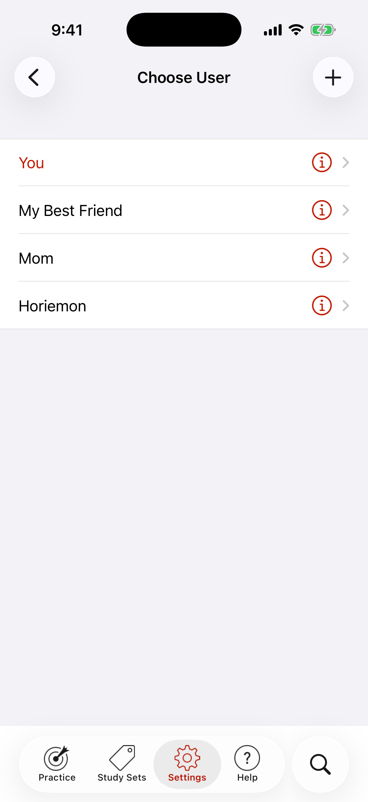

Multiple Users
Ever noticed how people like to borrow your iPhone or iPad? With most programs, their progress data gets mixed with yours. With Japanese in a Flash! you can add as many users as you like, keeping each user's progress data separate.

From the Settings tab, tap Active User to open Choose User. Tap a name and confirm to make that person the active user.
Add a new user with the + button. We've added some users to get you started!